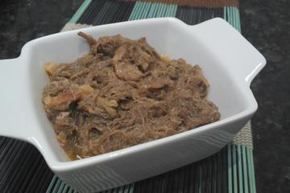
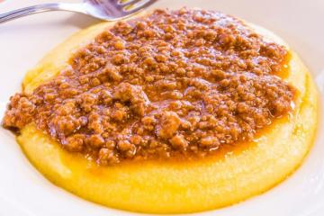

Arroz carreteiro

Ingredientes
1 kg de carne seca
1 cebola picada
1 colher de sopa de cheiro-verde
2 xícaras de chá de arroz
2 dentes de alho picados
6 colheres de sopa de azeite
Sal a gosto
Modo de preparo
Deixe a carne seca de molho de véspera, troque a água e cozinhe até ficar macia. Desfie. Frite-a em uma panela com azeite. Quando a carne estiver dourada, coloque a cebola e o alho. Junte o arroz e frite. Acrescente a água fervente e cozinhe em fogo baixo até o arroz ficar macio. Salpique o cheiro-verde e sirva em seguida. Bom apetite.
Site de retirada da receitaBarreado
Ingredientes
2,5k de coxão mole
300 g de bacon em cubos
2 cebolas grandes, picadas
5 dentes de alho, picados
10 g de cominho em pó
3 folhas de louro
Sal e pimenta do reino, a gosto
200 ml de vinagre de vinho
4 colheres de sopa de óleo de milho
2l de água fervente
Modo de preparo
1- Cortar a carne em cubos de 2 cm.
2- em uma vasilha plástica, juntar a carne, o bacon, as cebolas, os dentes de alho, o cominho, o vinagre, o sal e a pimenta do reino
3- misturar tudo muito bem e deixar descansando por uma hora.
4- adicionar o óleo de milho em uma panela de barro (de 5 l), untando-a por dentro e levar ao fogo brando.
5- quando o óleo estiver bem quente, acrescentar a carne temperada, mexer bem com uma colher de pau durante cinco minutos.
6- acrescentar a água fervente.
7- tampar a panela e barrear a tampa com pirão de farinha de mandioca;.
8- deixar cozinhando por cinco horas.
9- após, abrir a panela e verificar o nível da água (2 cm acima da carne) e o sal, se necessário, completar.
10- Acrescentar as folhas de louro.
11- tampar e barrear novamente a panela e deixar cozinhando por mais quatro horas.
12- levar a panela, com cuidado à mesa, servir em prato fundo, acompanhado de farinha de mandioca crua e banana prata.
13- Para esta receita ser servida no almoço eu começo o primeiro cozimento às 19:00h horas e desligo o fogo às 24: 00 h.
14- na manhã seguinte, às 08: 00 horas, após verificar o nível da água e o sal, tampo e barreio novamente a panela, religo o fogo e deixo cozinhando até às 12:00 horas.
Site de retirada da receitaPolenta
Ingredientes
2 litros de água
400 g de fubá
2 colheres (sopa) de manteiga
1 lata de leite condensado
1 colher (sopa) de sal
Modo de preparo
1- Em uma panela, leve a água ao fogo e acrescente o sal e a manteiga.
2- Quando iniciar a fervura, acrescente o fuba e mexa sem parar para não empelotar.
3- Deixe a polenta cozinhar por 30 minutos em fogo baixo.
4- Despeje a polenta em um refratário, salpique com parmesão e cubra com o molho de sua preferência.
Site de retirada da receita